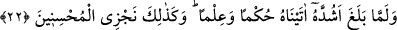

şeylerin ıslâhından daha önemlidir.
Kâbe, binâsıyken Halil-i Azer’in
Kalb nazargâhıdır Celil-i Ekber’in
22. (Yûsuf) tam erginlik çağına erişince, ona (isâbetle) hükmetme (yeteneği) ve
ilim verdik. İşte biz, güzel davrananları böyle mükâfatlandırırız.
Yûsuf “tam erginlik çağına erişince” ki bu çağ, Kamus’ta belirtildiğine göre on
sekiz-otuz yaş arasındaki devredir. Tefsirciler der ki: “Bu çağ, onun cisim ve gücünün
kuvvet bulmasının, akıl ve temyiz kabiliyetinin sağlamlaşmasının en son raddesidir. Bu
çağ, otuz ile kırk yaş arasındaki vukûf devresidir.
Akıl sâhipleri, insanların ömürlerini dört mertebe olarak tesbit ettiler:
1- Doğup büyüme devresi. Bu devre otuz yaşına kadar sürer.
2- Gençlik devresi de denen vukûf çağı. Bu devrenin sonu ömrün kırk senesi
tamamlanana dek sürer.
3- Yaşlılık devresi. Bu devre, pek belli olmayan hafif çöküş devresidir. Bu devrenin
tamamlanması altmış yaşına kadardır.
4- İhtiyarlık devresi. Bu devre, açıkça belli olan büyük çöküş devresidir. Tabiplere
göre bu devrenin tamamlanması yüz yirmi yaşına kadardır.
“Tam erginlik çağı” sûfîlerin fütüvvet makamı dedikleri, hilkatin perdelerinden
soyutlanarak ilk fıtrata ulaşmanın nihâî noktasıdır.
et-Ta‘rifât’ta şöyle der: “Fütüvvet, sözlükte cömertlik ve kerem demektir. Ehl-i
hakîkatin ıstılahında ise hem dünyada hem de âhirette başkalarını kendine tercih etmek
demektir.
“O’na hüküm ve hikmet verdik.” yani ona, kendisini insanlar arasında hakka göre
hükmedip onları idâre edebilecek kabiliyete ulaştıran ilim ve amel olgunluğu verdik.
Kuşeyrî der ki: “Allah’ın Yûsuf’a verdiği hükmetme kabiliyetinin tezâhür ettiği
durumlardan birisi, Yûsuf’un kendi nefsine hükmedip (hâkim olup) şehvetini
dizginleyerek Züleyhâ’nın kendisinden kâm alma isteğine karşı koymasıdır. Kendi
nefsine hükmedemeyen bir kimsenin hükmü başkalarına da geçmez.
İmam Râzî, Hasan Basrî’den naklederek diyor ki: “Tam ergenlik çağına erişince
ona... verdik.” ifadesinden anlaşıldığına göre Yûsuf kuyunun dibine atıldığı andan
itibaren peygamber olmuştur. Bu sebeple Mûsâ kıssasında “Mûsa tam erginlik çağına
erişip olgunlaşınca...” (el-Kasas, 28/14) buyrulurken bu kıssada ‘olgunlaşınca’
ifadesi kullanılmamıştır. Çünkü Mûsâ (a.s.)’a, güçlülük ve olgunluk çağının sona erdiği
bir devrede -ki bu devre kırk yaşıdır- peygamberlik verilmişken, Yûsuf (a.s.)’a bu çağın